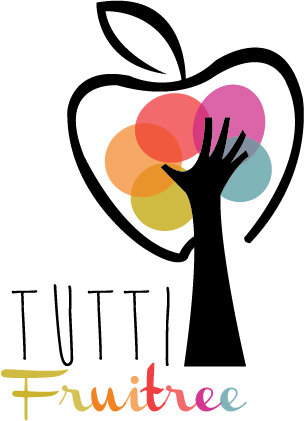

<div class="grid">
	<div class="unit unit-s-1 unit-m-1-2 unit-l-1-3"> 
		<h1>Catalog</h1>
		
	</div>	
	<div class="unit gutter unit-s-1 unit-m-1-2 unit-l-2-3"> 
	<p>Browse our catalog for weekly baskets of produce, flowers and many other farm products. Unlike the other parts of our on-line catalog, this section is devoted to helping you locate local foods that are available for purchase through Tutti Fruitree. Try <a href="" style="color: rgb(204,36,131)">CSA!</a></p>
		
	<ul>
		{% for catalog in site.pages %}
			{% if catalog.category == 'fruit' %}
				<li>
				<a href="{{sire.baseurl}}{{catalog.url}}">
					
					{{catalog.name}}
				</a>
				</li>
			{% endif %}
		{% endfor %}	
	</ul>
	</div>
</div>

{% include promo-large.html %}

